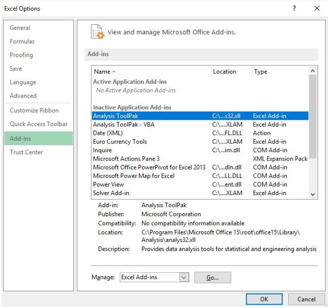
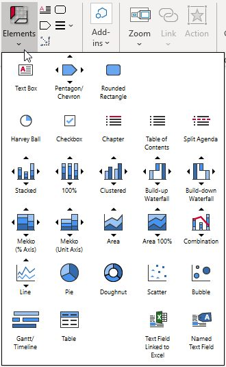
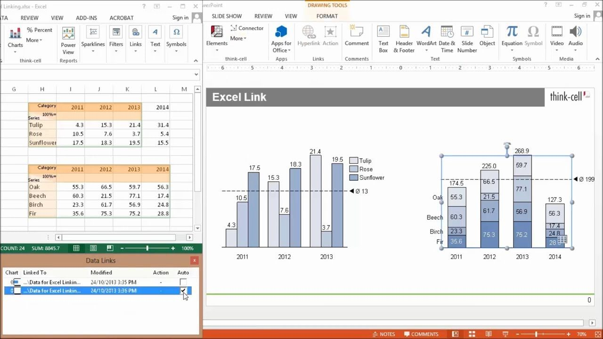
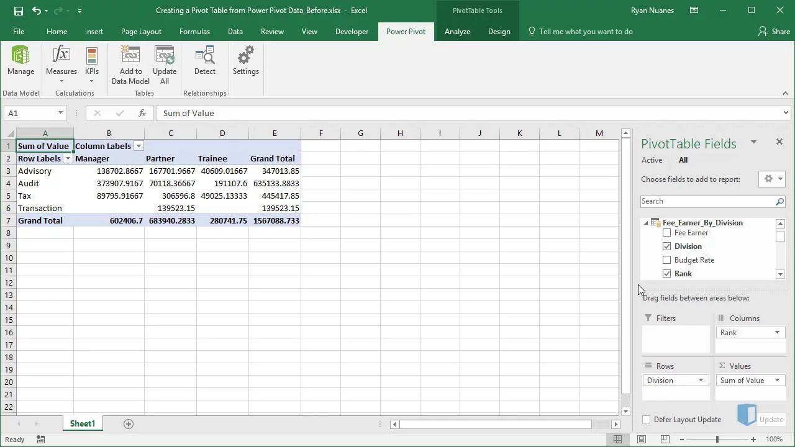
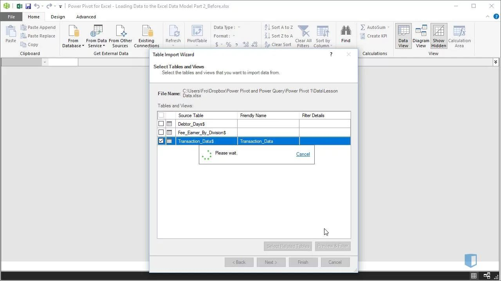
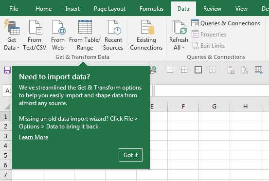
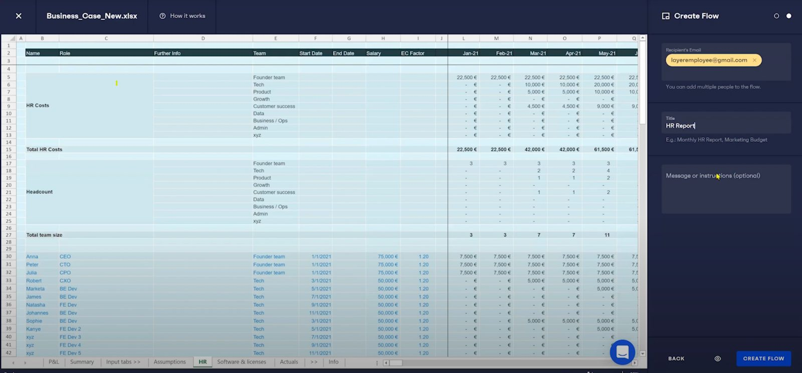

Excel Add-Ins – What’s the Point?
Data analytics technology has changed dramatically over the past few years, but Excel remains the tried-and-tested tool for finance professionals worldwide. It’s robust, highly flexible and has a legacy of being used in financial analysis and reporting for decades. If you’re using Excel on a daily basis, you may be surprised to learn of the ways in which it can be pushed well beyond its out-of-the-box capabilities.
Why Should Finance Pros Use Excel Add-Ins?
The world of finance is changing, but you don’t even need to leave Excel to harness the power of technological progress. All you need to do in order to access Excel’s Add-Ins is navigate to Insert > Get Add-ins, revealing thousands of add-ins available for Excel users. Many of these can be used to reliably augment your Excel workflow, expand your capabilities and boost your productivity.
So why do powerful add-ins so often get ignored? Organizational conservatism may play a role, but It’s also likely that the sheer range of options is so overwhelming that it’s hard to clearly see the value these add-ins can provide. But regardless of the reasons, the world will keep spinning and finance professionals of the future will need to adapt to keep up. In this post, we’re going to help you get the ball rolling by focusing on just five add-ins we believe offer a range of valuable capabilities for the finance professional of the future.
5 Recommended Excel Add-Ins for Finance
1. Analysis Toolpak
Key Benefit: Finance Function Library
Product Page: https://support.microsoft.com/en-us/office/load-the-analysis-toolpak-in-excel-6a63e598-cd6d-42e3-9317-6b40ba1a66b4
Cost: Free
Let’s start with the basics. Excel’s Analysis ToolPak add-in is a simple but powerful tool created by Microsoft. It’s best known for statistical capabilities, but it also unlocks a range of functions that are specifically geared towards financial analysis. This add-in is built on deceptively simple foundations and is essentially a workbook that brings a range of sophisticated functions into Excel.
Analysis ToolPak is created and owned by Microsoft, but this doesn’t mean that it’s active within Excel by default. You can learn how to activate it through the process explained within the Kubicle’s library. If you don’t have a Kubicle account, don’t worry – it’s pretty easy. You can read Microsoft’s guide on installing the add-in here.

If your work involves statistical components, then the Analysis Toolpak is likely a must-have. However in this post, we want to draw attention to the lesser known finance functions that are enabled by the add-in. We’ve created a list of these functions below so that you can review them and determine if they would add value to your workflow:
- ACCRINT – Accrued interest for a security paying interest periodically
- ACCRINTM – Accrued interest for a security paying interest at maturity
- AMORDEGRC – Asset depreciation in a single period (straight-line, implicit coefficient)
- AMORLINC – Asset depreciation in a single period (straight-line)
- COUPDAYBS – # Days between the previous coupon date and the settlement date
- COUPDAYS – # Days between the coupon dates on either side of the settlement date
- COUPDAYSNC – # Days between the settlement date and the next coupon date
- COUPNCD – # Next coupon date after settlement date
- COUPNUM – # Coupons between the settlement date and the maturity date
- COUPPCD – Previous coupon date before the settlement date.
- CUMIPMT – Cumulative interest paid on a loan between two dates
- CUMPRINC – Cumulative principal paid on a loan between two dates
- DISC – Interest rate % (or discount rate) for a security held to maturity
- DOLLARDE – $ fraction expressed as a decimal
- DOLLARFR – $ decimal expressed as a fraction
- DURATION – Annual duration of a security that pays interest periodically
- EFFECT – Effective interest rate % given a nominal interest rate and compounding frequency
- FVSCHEDULE – Future value of initial principal after applying compound interest rates
- INTRATE – Interest rate % for a security held to maturity
- MDURATION – Modified duration for a security that pays interest periodically
- NOMINAL – Nominal interest rate % over a period given an annual interest rate
- ODDFPRICE – Price per $100 face value of a security with an odd first period
- ODDFYIELD – Yield of a security with an odd first period
- ODDLPRICE – Price per $100 face value of a security with an odd last period
- ODDLYIELD – Yield of a security with an odd last period
- PMT– Payment for a loan with constant payments and fixed interest.
- PRICE – Price of a security that pays periodic interest
- PRICEDISC – The price of a discounted security (no interest payments)
- PRICEMAT – The price of a security that pays interest at maturity
- RECEIVED – The amount received at the end when a security is held to maturity
- TBILLEQ – The yield (bond-equivalent) for a treasury bill
- TBILLPRICE – Price per $100 face value for a treasury bill
- TBILLYIELD – Yield for a treasury bill
- XIRR – Interest rate % for a series of unequal cash flows at irregular intervals
- XNPV – Present value for a series of unequal cash flows at irregular intervals
- YIELD – Annual interest rate for a series of equal cash flows at regular intervals
- YIELDDISC – Annual interest rate % for a discounted security (no interest payments)
- YIELDMAT – Annual interest rate % for a security that pays interest at maturity
2. Think-Cell
Purpose: Advanced Charts for PowerPoint
Product Page: https://www.think-cell.com
Cost: ~$250/year for individual users (volume discounts available)
Information has no value if it can’t be communicated. If you’re working with financial data, you also need to ensure that you’re engaging effectively with stakeholders. This often means presenting accurate charts and visualizations in a clean and digestible format – a process that can be frustrating and time-consuming.
Think-Cell is designed to help you rapidly create charts and improve slide layouts, pulling data directly from your Excel spreadsheet. Think-Cell isn’t strictly just an Excel add-in, it’s also a PowerPoint add-in. This configuration enables an advanced link between Excel and PowerPoint, allowing for functionality that goes well beyond the native integrated capabilities that are available in these tools.

Additionally, Think-Cell offers automation capabilities, allowing you to apply programmatic logic that’s linked to an Excel or JSON file. Not only does the add-in allow you to present financial data more clearly, but it can automatically ensure that it is accurate and up-to-date.

3. Power Pivot
Purpose: Big data analysis and processing
Product Page: https://support.microsoft.com/en-us/office/start-the-power-pivot-add-in-for-excel-a891a66d-36e3-43fc-81e8-fc4798f39ea8
Cost: Free
Another free add-in! Like Analysis ToolPak, this application can be activated easily within Excel. It allows you to
process much larger datasets than Excel allows in its standard configuration. Without this add-in your dataset will be limited to 1 million rows. While this may not be a problem for many financial applications, certain use cases require the manipulation of huge datasets with millions of transactions. With Power Pivot installed, you don’t need to worry about limits.

PowerPivot allows you to load data from a wide variety of sources ( e.g. files, folders, databases, either locally or online). All this data can be linked in a single integrated data model, all stored within Power Pivot. While you may have fears and concerns around the unintended alteration of financial data, a key benefit here is that the underlying data is not modified in any way. Your data model can be refreshed in a click if the underlying data is updated.

While Excel’s data limit has often pushed analysts onto other platforms for analysis of large datasets, this limit no longer exists. You can now perform self-service analysis and exploration of large datasets without dramatically changing your workflow. It’s also worth noting that Power Pivot also unlocks more advanced analysis tools such as the DAX language, which is similar to Excel formulas. You’ll be able to perform activities such as:
- Loading an entire folder of text files into a single data table
- Converting exported accounting files into a digestible layout
- Loading millions of sales rows into Power Pivot directly
- Grouping daily data into manageable monthly results before importing them into Excel
- Splicing in data from another table by joining on matching columns
This add-in isn’t necessarily as intuitive as most of the other items on this list, so you can learn more about Power Pivot in Kubicle’s dedicated Excel course.
4. Get and Transform (Power Query)
Purpose: Data Preparation / Transformation, ETL processes
Product Page: https://support.microsoft.com/en-us/office/about-power-query-in-excel-7104fbee-9e62-4cb9-a02e-5bfb1a6c536a
Cost: Free
We’ve come a long way with modern analytics, but plenty of drudgework remains. As a finance professional, you’ll often find yourself working with vast quantities of data that come in different formats and originate from disparate sources ( e.g. files, folders, databases, either locally or online). Resolving this inconsistency and preparing data for analysis can be extremely time consuming, frustrating and vulnerable to error. The process of preparing this data is often seen as a “necessary evil”, but is this really true?
Thankfully, the answer is no. You can now use “Get and Transform” in Excel to connect, combine and transform relevant financial data. We’re breaking away from the criteria of our post here to focus on functionality that started life as an “add-in” but is now integrated into the standard Excel software experience (from Excel 2016 onward). If you’re using a recent version of Excel, you’ll see this functionality now appear under Data > Get and Transform.

Nowadays, data citizens of the future are using tools like Alteryx, Power BI and Tableau to extract, transform, and load data for analysis – reducing periodic work that can take multiple hours to seconds. But Excel won’t be disappearing anytime soon, particularly in the world of finance. Using “Get and Transform” you can easily implement high-value, code-free data prep techniques to transform your workflow (pardon the pun). Transformed data can easily refresh at the click of a button if the underlying data source changes – and established processes can be saved and reused with different data sources.
There’s lots to explore here, including the integration of these capabilities with the Power Pivot add-in previously covered in this post. As with Power Pivot, you’ll see a lot of these concepts covered in Kubicle’s dedicated Excel course in this area.
5. Layer
Key Benefit: Enhanced Collaboration & Automation
URL: https://golayer.io/
Cost: Free – $250+ (different pricing tiers available)
In recent years, Excel has evolved to offer valuable collaboration features. However, Excel’s standard functionality is designed to serve general use cases and may not provide adequate controls for financial use cases where security and confidentiality is key. Layer resolves this issue by adding – you guessed it – a collaboration “layer” on top of Excel, allowing for advanced collaborative functionality.

So what does this mean in practice? Well, by installing the Layer add-in you will unlock the ability to implement sophisticated access controls, allowing you to specify permissions for everything from groups of files to individual spreadsheet cells. You’ll also be able to implement process automation for repetitive tasks, including dissemination of periodic financial reports, notifications, and data verification requests. Finally, feedback mechanisms and version control allow for rapid, advanced reviews and iterations.
This is a collaboration tool that’s relevant to anyone who’s working on Excel files that involve other stakeholders, so this isn’t strictly geared towards finance professionals. However, finance workflows are increasingly integrating solutions like this that deliver speed, flexibility and ultimately superior results.
If collaboration technology does not seem relevant to your current way of working, it’s worth casting a critical eye on the orthodoxies that inform your organization’s culture. How are you collaborating with stakeholders on budgeting decisions or forecasts? How long do you spend consolidating data sources, or preparing and sharing reports? If these processes are defined by fragmentation and time-consuming grunt work, it’s certainly worth experimenting with collaborative add-ins like Layer.
We’ve only covered five of our favorite add-ins here, but there are thousands more available. Every company, team and role faces unique challenges and opportunities for optimization. Even if these solutions do not fit your particular needs, you may find a more precise solution to support your work by exploring available options from within Excel.
There is comfort in sticking to Excel’s standard offering, but it’s a mistake to ignore the ways in which its functionality can be augmented. By identifying the right tool for the right task in your workflow, you can achieve major productivity gains and introduce valuable functionality to your finance team.